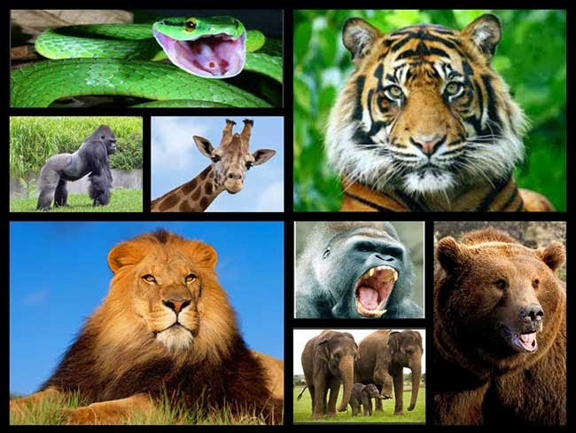

A diferencia de los animales domésticos, habituados a la presencia del ser humano, los animales salvajes son aquellos que se mantienen en su estado original, habitando espacios alejados de la intervención humana, e insertos en una dinámica natural a la cual responden sus instintos. Dicho en otras palabras, los animales salvajes son aquellos que no conocen relación alguna con el ser humano, y por lo tanto lo perciben como un elemento ajeno a su entorno y sus costumbres. Los animales salvajes constituyen el grueso de la biodiversidad y la innovación biológica de nuestro planeta, de manera tal que incluso desconocemos todavía un alto porcentaje de las especies que habitan en lo más denso de las selvas o en las regiones más recónditas del mundo. Eso no impide que nuestro modelo expansivo de vida suponga, por lo general, una amenaza para la vida silvestre, ya que la contaminación, la deforestación y la cacería indiscriminada, cuando no la introducción de especies invasoras en hábitats naturales, constituyen algunas de las actividades más dañinas en que el ser humano incurre directa o indirectamente. Por esto último existen numerosas asociaciones e instituciones dedicadas a la ecología y la protección de las especies amenazadas, o sea, aquellos animales salvajes cuyo número es tan reducido que la especie corre el riesgo de extinguirse. Hay especies salvajes que existen únicamente en cautiverio, en donde se las intenta reproducir para repoblar sus hábitats originales. Los seres vivos que disponen de movilidad propia y que forman parte del reino Animalia reciben el nombre de animales. Dentro de este inmenso grupo se encuentran los integrantes de la especie Homo sapiens, es decir, los seres humanos. Por eso, para trazar una diferenciación, suele entenderse por animal a las especies del reino Animalia que, según ciertos científicos, carecen de raciocinio, dejando afuera a los humanos. Eso no impide que nuestro modelo expansivo de vida suponga, por lo general, una amenaza para la vida silvestre, ya que la contaminación, la deforestación y la cacería indiscriminada, cuando no la introducción de especies invasoras en hábitats naturales, constituyen algunas de las actividades más dañinas en que el ser humano incurre directa o indirectamente.